① 一个“交互测试台”
你自己那份作品，加上 ≥3 种能当场演示出来的交互。要求：能跑、控制台无 JS 报错。
第 7 次课 · 2026-10-21 · 4 学时 —— 先不决定做什么作品，先摸清“作品能做出哪些动作”。前半程你们学会的是造一个空间，从今天起是把场景变成一件作品
上一次课你把作品连成了一条路；这一次课先把这条路上“能做的事”数清楚
前三次课学生做的是全景 + 注视停留跳转。到 10-14 结束，每人手上已经有一份能在头显里跑起来、带自己名字的全景 / 3D 作品——但它本质上是一个场景，交互手段基本只有一种：看着一个热点，跳过去。
而后面的案例（密室逃脱「敦煌寻宝」）从第 8 次课起就要求抓取、放置、顺序校验、点星、敲钟。这些前提原本假定在第 5—6 次课讲，但那两次课被第 5 章全景占用了——所以必须在这里补上，不然后面三次课全部落空。
你自己那份作品，加上 ≥3 种能当场演示出来的交互。要求：能跑、控制台无 JS 报错。
≥3 项，每一项逐项标 PC 可达 / VR 可达。只能在一端做的，如实写“仅 PC”或“仅 VR”，并在备注里写原因。
选题一页纸，六栏：主题 / 为什么必须 VR / 目标用户 / 核心交互 / 技术点 / 跑不动时的降级方案。课后作业见 业、课后作业，10-27 23:59 截止。
| 段 | 时段 | 时长 | 环节 | 现场放哪个演示 |
|---|---|---|---|---|
| ① | 0:00—0:07 | 7′ | 开场：口径纠正 + 大作业任务书 + M1 预告 | — |
| ② | 0:07—0:31 | 24′ | 讲授 A：三层工程结构（DOM / XR / 状态） | 案例 01：Shift+P 下沉、名字牌、VRSandbox |
| ③ | 0:31—0:55 | 24′ | 讲授 B：9 项交互范式（前 4 项细讲，后 5 项快速过） | lab01 悬停 / lab02 抓取 / lab03 投掷 |
| ④ | 0:55—1:05 | 10′ | 课间（不计入教学时长；顺手把笔记本接上） | — |
| ⑤ | 1:05—1:15 | 10′ | 模块 A+B：行业共识 + 大作拆解（Fitts / 按设计的握法 / Alyx 重力手套 / Diegetic UI） | lab08 Fitts / lab05 拉力 / lab06 UI 四分类 |
| ⑥ | 1:15—1:20 | 5′ | 模块 C+D：舒适度科学 + 零件边界（只给结论，原理在网页自学） | lab07 舒适度 / lab09 触觉手势 |
| ⑦ | 1:20—1:23 | 3′ | 工作室发布：E1—E6 练习菜单 + 三次检查点 + 擂台规则 | — |
| ⑧ | 1:23—2:53 | 90′ | 工作室：6 个分层练习 + 3 次检查点 + 擂台竞赛 | 学生动手；教师巡场 |
| ⑨ | 2:53—3:00 | 7′ | 收束：达标线 + M1 + 三条通路现场走一遍 | 案例 01 退出演示 |
| 时段 | 时长 | 环节 |
|---|---|---|
| 0:00—0:10 | 10′ | 开场（口径纠正 + 任务书 + M1） |
| 0:10—1:00 | 50′ | 讲授 A+B：三层结构 20′ + 9 项范式 30′（含 lab01—03 演示） |
| 1:00—1:10 | 10′ | 课间 |
| 1:10—1:40 | 30′ | 模块 A+B：行业共识 12′ + 大作拆解 18′（lab05/06/08） |
| 1:40—1:50 | 10′ | 模块 C+D：舒适度 6′ + 零件边界 4′（lab07/09） |
| 1:50—1:55 | 5′ | 工作室发布 |
| 1:55—3:25 | 90′ | 工作室 E1—E6 + 三个检查点 + 擂台 |
| 3:25—3:40 | 15′ | 收束：达标线 + M1 + 三条通路 |
逐段相加：10 + 50 + 30 + 10 + 5 + 90 + 15 = 210′（含课间 10′）——比 180′ 多 30′。 若只能加到 200′，把模块 A+B 从 30′ 压到 20′、收束从 15′ 压到 10′。
第 6 次课末尾（教学方案第 262 行、课件屏 27 之后）预告的是“第 7 次课进入第 6 章 Unity 虚拟现实应用开发”。这句话今天当众作废。
“下次进入第 6 章 Unity 开发，密室逃脱那个项目。” —— 那是 10-13 之前的旧口径。
① 后半程不学 Unity，改讲基于 WebXR 制作的虚拟现实作品；② 每人交一件 WebXR 作品（期末大作业，占 40%，个人作品，第 12 次课路演）；③ 每次课交一个里程碑——今晚就有第一个（M1）。
| 课次 | 日期 | 一句话主题 | 你要交的里程碑 |
|---|---|---|---|
| 第 7 次（今天） | 10-21 | 交互零件库：先把“能做的事”做全 | M1 选题一页纸 |
| 第 8 次 | 10-28 | 作品要有目标：空间动线与状态机 | M2 动线图 + 状态机图 |
| 第 9 次 | 11-11 | 路要通、退得出、谁都点得到 | M3 主流程可玩（硬门槛） |
| 第 10 次 | 11-18 | 好看和跑得动是两件事 | M4 性能报告 |
| 第 11 次 | 11-25 | 让作品会说话，并且能被度量 | M5 功能封版 |
| 第 12 次 | 12-02 | 结课路演与验收 | M6 路演答辩 |
这张表不用记，只看三处：M1 是今天；M3 在第 9 次课，标了“硬门槛”——那一次过不去，你的作品就不算完成；M6 是 12 月 2 日，路演。 后面每次课都是同一套骨架：开场 + 讲授 + 课间 + 工作室 + 收束，但工作室时长会随课次上调（第 7 次课已经是 90′ 工作室），学生形成预期。
| 项目 | 内容 |
|---|---|
| 占比 | 期末大作业 40%（总评 = 平时 30% + 课堂作业 30% + 大作业 40%） |
| 形式 | 个人作品 · 无上机考试 · 第 12 次课现场路演 3—5 分钟 |
| 类型 | 以 VR 沉浸作品为主：头显浏览器打开、进入 immersive-vr 会话完成主流程 |
| 禁止 | 不得直接提交课内案例 01—06；可复用其技术，但主题与完成度必须明显不同 |
| 点赞三条硬门槛（当众先念这三条） | ① 能进能退：三条通路之一进 VR，三条退出路至少试通一条；② 零外部网络依赖：不引任何 CDN，断网可跑；③ ≥3 种可指认的交互，且 PC 与 VR 两端都能完成主流程 |
《期末大作业任务书》写清了个人作品的十条硬门槛、评分量规与六个里程碑——今晚的 M1 就是它的第一步。 “课堂作业墙”里是上一次课全班已交的作品，可以点开对照——你今天要做的，就是让这些作品多出 3 件“能做的事”。
本课唯一必须记住的结构：DOM 层 / XR 层 / 状态层，以及三处交界
不先讲结构，先看现象。在案例 01 的 PC 预览里按一次 Shift+P——场景里的两块面板一起下沉了 0.45 米，还往下倾了 0.18 弧度（与工程面板同步）。
Shift+P 它只会被压在原地——而且更要命的是，进了沉浸模式，网页浮层根本不渲染，你压根看不见它。这一屏必须让学生自己看出来：不要直接说“下沉 0.45m 说明它是 3D 的”，先问“它为什么跟着沉”，等学生说出“因为它跟着参考系”再往下讲。
沉浸模式（immersive-vr）里，DOM 层退出渲染。于是同一份 HTML 里，必然住着两种界面——
把现象翻译成一句工程话：你交付的是一个 HTML 文件，但这个文件在两种情况下表现完全不同。在 PC 上它是网页（有 DOM、有键位、有控制台），在头显里它是一段 3D 场景（DOM 全部下线，只剩渲染出来的 3D 内容）。一份文件里同时住着两种界面，怎么写才不会打架？答案是分成三层。
┌─────────────────────────────────────────────┐
│ ① HTML / DOM 层 —— 给 PC 与开发看 │
│ 键位表 · 说明牌 · 报错 · 开发期调试 │
│ 特性：沉浸模式下【不下线绘制】 │
├─────────────────────────────────────────────┤
│ ② XR 层 —— 给头显看 │
│ 会话 immersive-vr · 参考系 local-floor │
│ 帧循环 · 帧预算 13.9ms · 动态降级 L1/L2 │
│ 移动与转向范式（瞬移 + Snap 45°） │
├─────────────────────────────────────────────┤
│ ③ 状态层 —— 一个 S 对象 │
│ 力/速度/计数/开关/进度，全在这里 │
│ 特性：可被外部查询、可被外部改写 │
└─────────────────────────────────────────────┘
↑ 三层的交界只有三处，下面逐层展开 ↑
Shift+P 一按，DOM 层没变、XR 层下沉了 3D 面板——全班同时能看到“层在哪里分界”。鼠标拖拽环视 / W A S D 行走（Shift 加速）/ Q E 转身 / 左键点物体抓取 / 左键点地面传送 / 左键点面板 / R 重置。
键位说明牌、报错提示、window.isSecureContext 检测（不安全时按钮直接写“进入 VR（需要 HTTPS）”）。
| 同一件事 | 写法 | 结果 |
|---|---|---|
| ❌ 网页浮层 | <div class="name">张三</div> | PC 上看得见，头显里不存在 |
| ✅ 3D 物件 | 场景里的一块牌子 / 铭牌 / 碑 | PC 与头显都在 |
上一次课全班 9 份作品，做出了 9 种 3D 名字：横匾 / 门牌 / 金色铭牌 / 署名石碑 / 霓虹横幅 / 牌坊 / 立牌 / 云柱牌子 / 场景内立体文字。这就是“分层”在你们自己作品里的第一次落地。
这一层最容易被写坏的一个地方，是按钮：看着能点、其实点不动。上一届有同学的处理办法很好——加了一行 btn.disabled = false，又加了一个 window.isSecureContext 检测：不在安全上下文里，按钮上直接写“进入 VR（需要 HTTPS）”。他不是背下来这两条，是踩过之后把它写进了代码里。
immersive-vr —— 能不能进 VR 的第一个前提。
local-floor —— 眼高由它决定。
每一帧做什么。状态就在这一层被读到画面上。
navigator.xr 只在 https / localhost / 127.0.0.1 下暴露。
file:// 下它就是 undefined —— 页面上根本没有“进入 VR”这个按钮，这不是代码坏了。
这就是从第 5 次课立的那句口号：先怀疑环境，再怀疑代码。今天不讲优化（那是第 10 次课）。今天只要求你认出两个读数在哪：FPS 与降级等级。待会儿进 VR 的时候，先低头找到这两处。
| 触发条件 | 动作 | 能否恢复 |
|---|---|---|
| 帧时间持续超预算 20% 达 2 秒 | L1 降像素比 → L2 关阴影 | 余量恢复时自动回升（可逆） |
| 没有降级 | 记作 L0 | — |
待会儿进 VR，如果面板上写着 L1 或者 L2，那说明当时的机器撑不住——把它记下来，第 10 次课专门解决这个。
| 做法 | 舒适度 | 代价 |
|---|---|---|
| 瞬移（传送） | 最不易晕 | 破坏空间连续性 |
| 平滑移动 | 沉浸感好 | 晕动症主要来源 |
| Snap 45° 转向 | 显著降低眩晕 | —（有 380 ms 冷却防误触） |
| 平滑转向 | 连续 | 更易晕 |
整个作品的可变部分，住在一个 S 对象里：力 / 速度 / 计数 / 开关 / 进度，全在这里。案例 01 的调试入口：浏览器控制台输入 VRSandbox，可查看 / 操作全部状态；面板上的“重力”按钮，实时改的就是 S.gravity（默认 9.8）。
S.gravity（重力，默认 9.8）与 S.restitution（弹性）。
课堂作业里有这么一条：把重力从 9.8 调到 3，再投一次，描述手感差异。S 上，而是散在三个函数里各写一遍 9.8——改重力得改几处？三处，而且只要漏一处，这个球的行为就自相矛盾。
这就是“一个 S”的价值：同一个东西，全作品只有一个来源。S 对象，且可被外部查询（window.XX.S）。为什么要“能被外部查询”？三个真实用途：console.log；| 交界 | 规则 | 违反的后果 |
|---|---|---|
| DOM ⇄ XR | 沉浸模式下 DOM 下线 | 面板 / 名字在头显里看不见 |
| XR ⇄ 状态 | 帧循环每帧读一次 S | 状态改了但画面不变 |
| 状态 ⇄ DOM | 面板按钮与键盘快捷键共用同一个 S | 同一个人两个值，行为自相矛盾 |
最后一条叫 单一设置源（single source of truth）。举例：面板上有个“重力”按钮把它调到 3，你又写了个键盘快捷键按一下把重力设回 9.8；如果这两个用了不同的变量，屏幕上显示的是 3，实际跑的是 9.8——你自己都会被自己骗。
写完这三行你就会发现：你现在的作品，三层基本是糊在一起的。这不丢人——上次课的目标是“把路走通”，不是“把结构搭好”。 但从今天起，你改每一处的时候都要问一句：这一行属于哪一层？
Shift+P 三处交界演示改成口头带过。35 分钟，9 项全部现场演示一遍，时间不等分：前 4 项各 4—5′，后 5 项各 2—3′
课间完了，换一件事做：数零件。案例 01 的价值不在画面，而在它把 9 种交互范式用一份可读的单文件写全了。 下面这张表你们不用抄（任务卡上有），要抄的是“案例里的实现”和“要讲的点”两列——待会儿改自己作品时，能直接抄的就是这一列里的做法。
| # | 范式 | 案例里的实现 | 要讲的点 | 演示 |
|---|---|---|---|---|
| 1 | 射线指向 | 手柄发蓝色射线，命中物体 / 面板 / 地面 | 最通用的“远距离指针”，判定用 Raycaster.intersectObjects；记住这三种命中，后面所有交互都在这三种上分岔 | ★ 5′ |
| 2 | 悬停反馈 | 命中按钮时高亮 + 轻震动 + 提示音 | 没有反馈的交互等于没有交互；反馈要视觉 + 触觉 + 听觉三通道，做自己的按钮时至少给两个 | ★ 4′ |
| 3 | 直接抓取 | 握持键（squeeze）抓 0.35 m 内物体，Object3D.attach() 保持世界变换 | attach 与 add 的区别：add 会跳变，attach 保留世界位姿；这两个方法差一个字母，效果差很远 | ★ 5′ |
| 4 | 3D UI | CanvasTexture 面板 + 射线 UV 命中检测，6 个按钮 / 开关 | UV → 像素坐标 → 按钮矩形命中；WebXR 里最实用的 UI 方案，不需要任何 UI 框架 | ★ 5′ |
| 5 | 移动：传送 | 射线指地 → 绿色落点环 → 松扳机平移 | 最不容易晕，但破坏空间连续性（“我刚才还在客厅吗”） | ★ 3′ |
| 6 | 移动：平滑 | 左摇杆连续推动；面板可切换 | 沉浸感好，但是晕动症主要来源；可连做 30 秒体会差异 | ★ 3′ |
| 7 | 转向：Snap 45° / 平滑 | 右摇杆；380 ms 冷却防误触 | Snap 显著降低眩晕；VR 里永远不要强制旋转相机 | ★ 3′ |
| 8 | 远距离拉取 | 扳机指向远处金色方块，方块飞向手柄，<0.42 m 自动吸附上手 | “隔空取物”是舒适度高但真实性差的折中方案——什么时候用它，是设计选择，不是更好的方案 | ★ 3′ |
| 9 | 投掷 | 释放时按手柄线速度（EMA 平滑）赋初速度；落地弹跳、撞墙按法线弹性反弹 | 速度采样必须平滑（vel.lerp(..., 0.35)），否则手一抖球就飞出去；物理手感是调出来的，不是写出来的 | ★ 4′ |
| ＋ | 触觉反馈 | 抓取 / 命中 / 收纳 / UI 各不同强度 pulse() | inputSource.gamepad.hapticActuators[0].pulse(强度, 毫秒) | 穿插在 2/3/9 里 |
| ＋ | 目标反馈 | 彩球入同色箱 / 投中靶盘：计数 + 闪光 + 音效 | 目标 + 即时反馈 = 可评估的交互，而不是“能抓就行” | 穿插在 9 里 |
逐项对时：5 + 4 + 5 + 5 + 3 + 3 + 3 + 3 + 4 = 35 分钟。建议把这张时间纸条压在讲台手边。
squeeze）：抓取 0.35 m 内物体；释放即投掷；W A S D（Shift 加速）：行走；Q / E：转身；R：重置场景。| PC 快捷键 | 行为 | 课上怎么用 |
|---|---|---|
Shift+P | 坐姿 / 站立（面板随之下沉 0.45 m、下倾 0.18 rad） | 讲三层结构时的开场现象 |
Shift+H | 惯用手循环：双手 → 单手（自动）→ 仅右手 → 仅左手 → 双手 | ★ 至少试一次“仅左手”，见下 |
Shift+G | 注视停留点击（停在按钮上 1.2 s 触发，相机上有注视准星） | 讲“边界一”时的演示 |
Shift+H 到“仅左手”）：案例在单手模式下所有交互仍可完成。Shift+G）：注视停留只能点 3D 面板（工程面板 + 案例自有控制面板，停留 1.2 s 触发，相机上有注视准星）。
场景实体（球、方块）仍需手柄射线——这条边界不要掩盖，它正是第 9 次课“免手柄通路怎么补”的讨论起点。⚑ 这一屏必须让学生自己看出来：先把视线移到场景里的球上停住，球不动；问“为什么球不动”，等学生说出“面板和物体是两套判定”再往下讲边界二。
squeeze 与触觉 hapticActuators 未在真机验证，PICO 固件对这两者的支持存在版本差异。
若握持键无响应 → 改用扳机抓取。全部是单文件 WebXR：点开就能在 PC 上用鼠标键盘玩，头显浏览器打开就能进 VR
案例 01 是一间大实验室——9 个零件都在里面，但它太大，学生第一次读会迷路。 这套演示库把每个零件拆成一个独立小页：一屏只讲一件事，HUD 上写着“这个演示在课堂上要讲什么”，面板上只有 3—6 个按钮，源码只有几百行。
LAB.api.selfTest()，会返回该演示的核心机制断言（状态机 / 物理 / 命中 / 反馈 / 重置），11 个页面合计 175 条断言（单例 10—28 条）。
课堂上可以让学生现场跑一次——“代码里写了”和“当场能跑通”是两件事，这条口径从案例 01 沿用。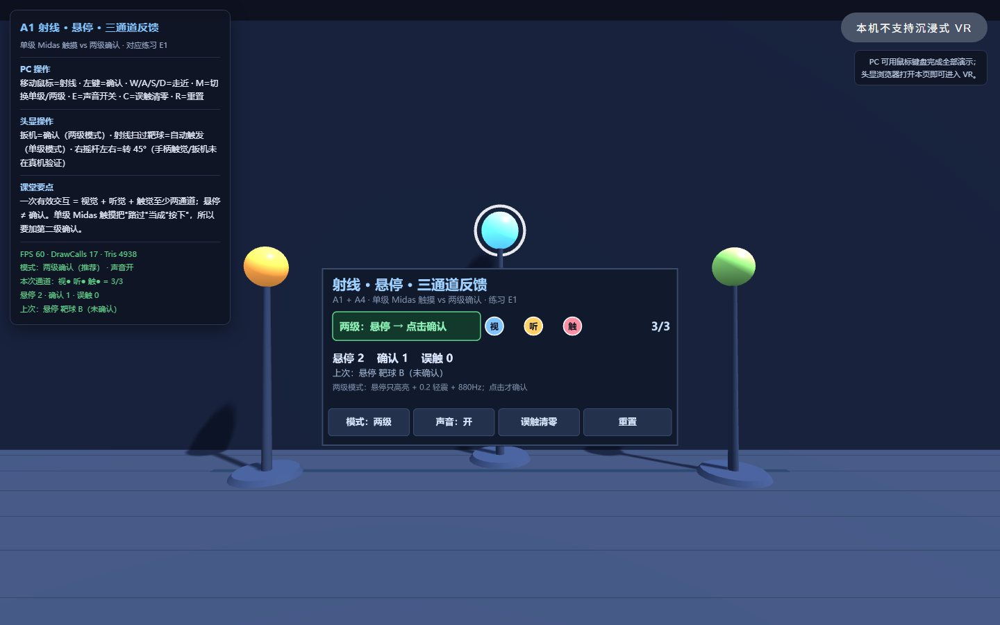
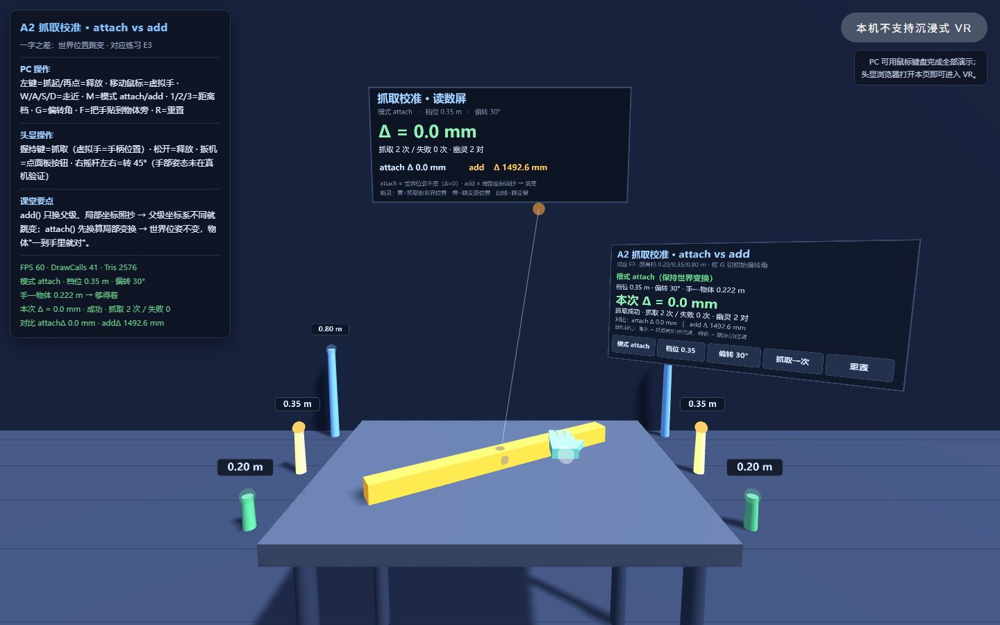
attach() 抓起来位姿是对的，add() 会“跳”一下；屏幕上直接给出跳变距离（毫米），抓取距离还能切 0.20 / 0.35 / 0.80 m。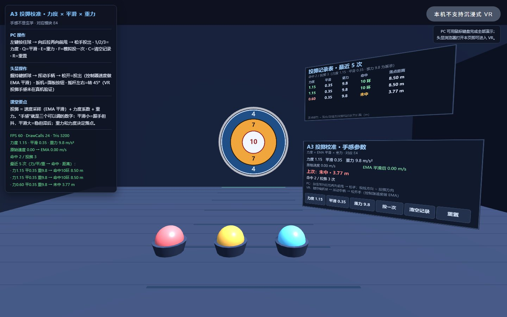
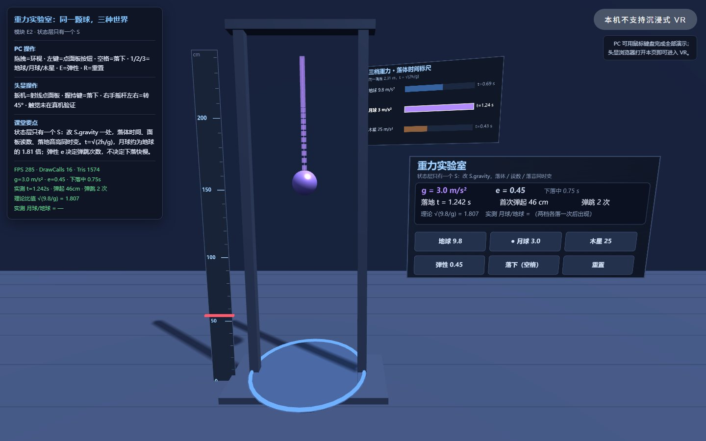
S.gravity，画面、读数、音高同时变。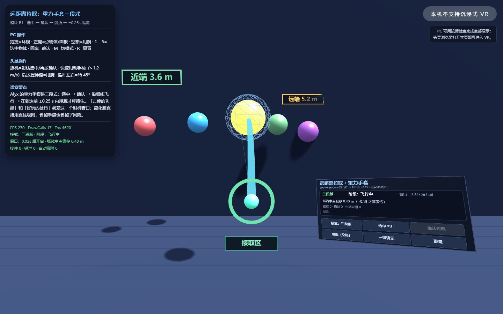
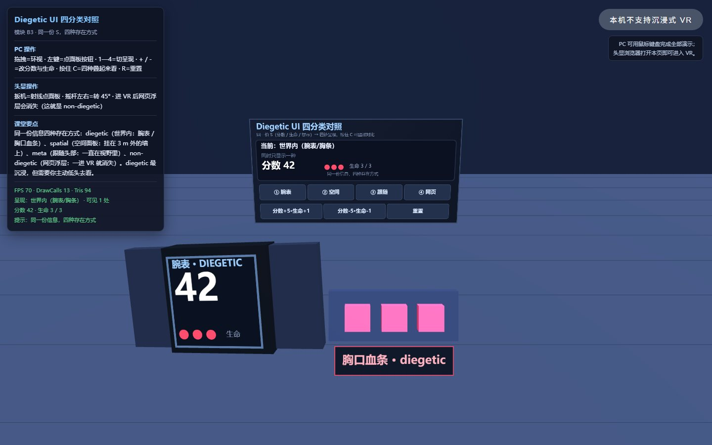
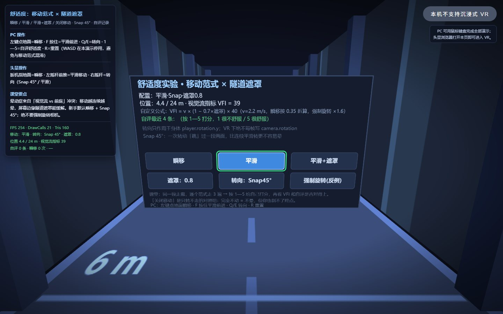
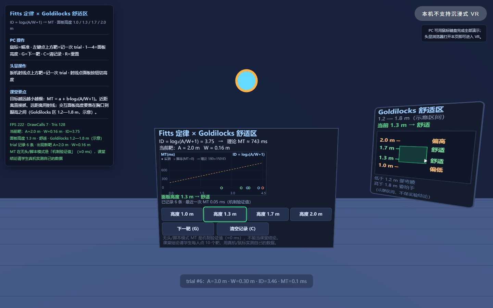
ID = log₂(A/W+1) 与 MT 画成散点；面板高度可切 1.0 / 1.3 / 1.7 / 2.0 m，判定“要弯腰 / 舒适 / 要抬手”。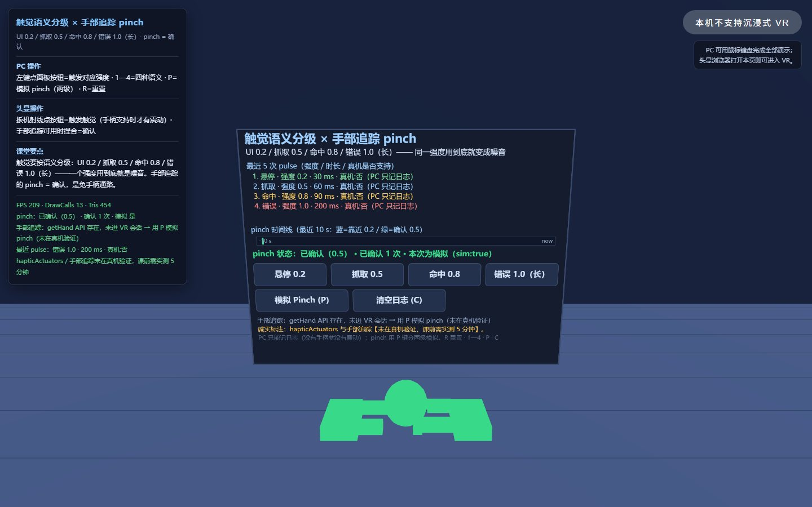
P 模拟，走通“靠近 → 捏合确认”的两级通路。打开方式：PC 上双击/本地服务器即可；头显里必须用 https 或 127.0.0.1（file:// 不是安全上下文，navigator.xr 是 undefined）。课堂上最省事的是——这些演示已经挂在课程站的 https 上，头显浏览器输网址就能开。
收束段花 7 分钟把三条现场走一遍，但课堂上只教走通的那一条
这节课是后半程第一次真机实操，后面五次课每次都要走通路。今天不把通路讲透，后面五次课每次都要花 20 分钟救火。 三条都演示、只教一条，是为了让学生知道“还有别的办法”，遇到问题时不会卡死在一条路上；同时避免教师在课堂上同时维护三条路径。
| # | 通路 | 我怎么操作 | 特点与麻烦 |
|---|---|---|---|
| ① | USB + adb reverse | 数据线连头显与笔记本，执行 adb reverse tcp:8080 tcp:8080 → 头显浏览器开 http://127.0.0.1:8080/ | 天然是安全上下文（127.0.0.1），校园网再怎么隔离也不怕、不占网络；但要开发者模式与 adb |
| ② | 局域网 http + 头显白名单 | 头显浏览器进 chrome://flags/#unsafely-treat-insecure-origin-as-secure，填入 http://电脑IP:端口 | 不用连线；但电脑 IP 一变就要重填，这是它最大的麻烦 |
| ③ | 站点 https | 直接打开 https 地址 | 最省事，也是以后收作业与互评的首选；需要有可发布的站点 |
navigator.xr 只在 https / localhost / 127.0.0.1 下暴露。
file:// 不是安全上下文 → navigator.xr 是 undefined → 页面上看不到“进入 VR”按钮。https / localhost / 白名单地址打开。| 三条退出路 | 操作 | 课上怎么记 |
|---|---|---|
| ① 注视按钮 | 注视「退出 VR」1.5 秒 | 打钩 + 记下用时 |
| ② 握把长按 | 长按手柄握把 2 秒 | 打钩 + 记下用时 |
| ③ 系统键 | 头显系统键 | 打钩 + 记下用时 |
全程最长的一段。宁可少讲一个知识点，也要让每个人手上有一个能跑的东西
这 90′ 不是“从零写一个作品”：练习菜单里的每一项，都能在演示库的某个单文件上改出来——改码入口给到变量名，目的是把时间留给“我想做什么”，而不是“这行怎么拼”。 每完成一个练习，你就多一块能当场演示的东西，同时也就是 M1 里“核心交互”的一行素材——练习不是额外任务，是给选题供弹药。
组内不共享代码，只共享测试：你的交互要让同组同学不用你讲解也能操作成功——这就是第 9 次课“路要通”的预演。
CP1 第 20′：展示前两个练习；CP2 第 45′：强制摘头显休息 2′ + 报卡壳类别；CP3 第 75′：交换座位互测。
环境（打不开 / 没按钮 / 通路不通）→ 学生管理员；作品（报错 / 交互不生效）→ 教师；设备（头显 / 手柄 / 触觉）→ 换设备，不修设备。
| 练习 | 时长 | 在哪个演示上做 | 任务 | 验收标准 |
|---|---|---|---|---|
| E1 三通道按钮 必做 | 10′ | 你自己的工作台面板 或 lab01 / lab04 的面板 |
给自己面板上的一个按钮补齐三通道：悬停高亮（视）+ 合成短音（听）+ pulse(0.2, 30)（触）；按下换成另一种声音 + pulse(0.5, 60)。 |
射线扫过 → 三通道齐发；按下 → 三通道同时换档；音效在进入 VR 后仍能响（在“进入 VR”的用户手势里 ctx.resume()）。 |
| E2 重力实验室 必做 | 12′ | lab04 或 lab03 | 依次把重力设 9.8 → 3 → 25，每次投一颗球，用一句话记录手感差异；再把弹性调到 0.9 看“跳跳球”。 | 三档手感各一句（如“月球上球像羽毛，出手即飘”）＋ 能把重力做成面板三档循环按钮（VR 里不用键盘也能切）。 |
| E3 抓取校准 必做 | 12′ | lab02 | 把一个 attach() 临时改成 add() 抓一次，记录“跳”的瞬间；再把抓取距离从 0.35 调到 0.20 和 0.80 各抓一轮。 |
纸上两句话：“add 会跳，因为＿＿＿（坐标系换算）”；“我觉得舒服的抓取距离约＿＿ m”。互测点：同桌不知道数值，抓一次觉得自然才算过。 |
| E4 投掷校准 必做 | 12′ | lab03 | 力度依次改 0.6 / 1.15 / 2.0，各投 5 次进同一个箱子记命中数；再把平滑系数改到 0.05 体会“手一抖球就飞”。 | 一张三行表（力度档 × 命中数）＋ 你选定的参数值写进《交互清单》备注。这是全班第一次“用手感数据说话”。 |
| E5 擂台挑战 分组必做 · 本课高潮 | 20′ | demo01 投篮擂台（示范） 自建：投篮 / 射击 / 彩球归箱 三选一 |
把零件攒成一个可评估的小玩法：目标 + 计分 + 命中反馈 + 重置按钮；做完派一人上讲台演示 60 秒。 | ① 计分显示在 3D 面板/计分板上；② 命中两通道以上反馈（闪光+音效，最好加震动）；③ 有重置按钮。先做重置，再做计分（球飞出场地是必发生的）。 |
| E6 无障碍挑战 选做 · 加分 | 12′ | 任意演示 / 自己作品 | 切到仅左手模式（或单手操作方案）把 E5 玩法完整玩一局；再试注视停留能不能点到自己面板的按钮。 | 一句结论：“我的玩法在单手模式下 ☐ 能玩 / ☐ 缺＿＿这一步”；缺的那一步如实写原因——这就是 M1“降级方案”的素材。 |
| 擂台 | 玩法 | 用到的零件 | 判定 |
|---|---|---|---|
| 🏀 投篮擂台 | 站罚球线 → 抓球 → 投进筐 → 计分板 +1 + 音效 + 筐闪一下 | 投掷 + 目标反馈 + 3D 计分板 | 3 球记最高命中数 |
| 🎯 射击擂台 | 远处靶子依次亮起（间隔 3 秒）→ 远距离拉取取球 → 投/砸中亮靶 | 拉取 + 投掷 + 状态计时器 | 30 秒记命中数 |
| 🧩 彩球归箱 | 散落 6 个彩球 → 按颜色投进对应箱子，错投弹回并提示扣分 | 抓取 + 投掷 + 碰撞判定 + 计分 | 60 秒记正确数 |
在场景里挂一个 3D 面板（至少 1 个按钮能真的改到状态）＋ 2 个场景实体（如可抓的球 / 可点的物件）。
加 1 个 3D 面板 ＋ 把已有的一件交互补成“有反馈的交互” ＋ 再补一件新交互。
| 检查点 | 时间点 | 全班动作 | 教师动作 |
|---|---|---|---|
| CP1 | 第 20′ | 放下设备，展示“我做完的前两个练习” | 同桌打钩；巡场只处理作品类问题 |
| CP2 | 第 45′ | 强制摘头显休息 2 分钟，然后报“我卡在哪类：环境 / 作品 / 设备” | 把卡壳按三类计数（第 9 次课备课依据）；环境类交学生管理员 |
| CP3 | 第 75′ | 交换座位互测：按互测卡打钩，不讲解、让对方自己操作 | 收互测卡；挑 3 组准备擂台演示 |
| 想改什么 | 找哪里 |
|---|---|
| 按钮的三通道反馈 | lab01：DEMO.onPick() 里的 beep(...) 与 pulse(null, 0.5, 60)；悬停强度在 updateHover() |
| 抓取距离 0.35 m | lab02：S.maxDist 档位数组 / tryGrab() 的距离判定 |
| attach 与 add 的差别 | lab02：S.mode === 'attach' ? parent.attach(obj) : parent.add(obj) 这一行 |
| 投掷力度 / 平滑 / 重力 | lab03：S.power、S.smooth、S.gravity；速度平滑在 lerp 系数 |
| 重力 / 弹性（一个 S） | lab04：S.gravity、S.restitution（面板三档按钮实时改） |
| 拉取的弧线 / 接住窗口 | lab05：CATCH_WINDOW（±0.25 s）与贝塞尔控制点 |
| UI 的四种放法 | lab06：setMode() 的四个分支；腕表挂在 camera 下的那行 |
| 移动方式 / 遮罩强度 | lab07：S.move、S.vignette、SNAP_ANGLE |
| 目标大小 / 距离 / 面板高度 | lab08：trial(A, W) 与 S.panelHeight |
| 触觉强度 / pinch 判定 | lab09：强度表 HAP 与 onPinch() |
| 计分 / 计时 / 状态机 | demo01：S.phase（ready/playing/over）、shoot()、tick() |
| 案例 01 的老入口 | 抓取距离在 squeezestart 的 bestD；投掷在 squeezeend 的 multiplyScalar(1.15)；调试入口 VRSandbox |
表里没有的，打开文件搜关键字，别猜；改坏了重新下载一份原文件，不要在没有备份的文件上试错。
| 顺序 | 做什么 | 要留下的东西 |
|---|---|---|
| 先 PC | 鼠标拖拽环视、W/A/S/D 行走、鼠标左键点面板与物体、R 重置——把 3 项都演示一遍 | 3 项在 PC 上跑通的记录 |
| 再 VR | 走当堂走通的那一条通路进头显，确认自己那 3 项交互在头显里也做得到 | FPS / 降级等级两个读数 |
| 填表 | 填《交互清单》：≥3 项，逐项标 PC / VR 可达；只能在一端做的，如实写“仅 PC”并在备注里写原因 | 一份《交互清单》 |
| 我装的交互 | 视觉反馈 | 触觉反馈 | 听觉反馈 | 至少给了 2 个通道？ |
|---|---|---|---|---|
| 1 | □ | □ | □ | □ |
| 2 | □ | □ | □ | □ |
| 3 | □ | □ | □ | □ |
① 戴上之前先看清周围有没有人；② 不许在戴着头显时走动——移动用摇杆或传送。
眼镜同学先戴眼镜再戴头显；一次性眼罩 ≥40 片、擦镜布、消毒湿巾；指定 2 名学生管理员负责发放与擦拭。
前三次课的统计口径是三类卡壳：环境 / 作品 / 设备。第 7 次课是后半程第一次上机，环境类卡壳一定最多。
| 优先级 | 保 | 砍 |
|---|---|---|
| 1（绝不砍） | E1 三通道按钮 + E5 擂台（含 60 秒演示环节） | — |
| 2（绝不砍） | E2 重力实验室（状态层“一个 S”的落地） | — |
| 3 | E3 抓取校准 | 压缩为“只做 add 对比”5′ |
| 4 | E4 投掷校准 | 压缩为“只调一档力度”5′，命中表并入 E5 擂台现场记录 |
| 5 | E6 无障碍挑战 | 全部转课后（在作业单上标“H6 选做”） |
| 6 | CP3 互测 | 改成“相邻组互换看一眼”，不填互测卡 |
“可用”的口径是当场能演示，不是“代码写了”
上面三条，一条都不动。
写得出“我改了哪个变量、为什么改”。
《交互清单》上的“PC 可达 / VR 可达”必须与实物一致——编一栏比做不出来更严重。
| # | 自查项 | 打钩 |
|---|---|---|
| 1 | 我的页面能通过某一条通路打开，并且能看到“进入 VR”按钮 | □ |
| 2 | 我能进入 VR 会话，并且退得出来（三条退出路至少试通一条，记了用时） | □ |
| 3 | 我装了 ≥3 种交互，每一项当场演示得出来 | □ |
| 4 | 其中至少 1 种是我自己 3D 面板上的按钮 | □ |
| 5 | 我的控制台没有 JS 报错，主流程能重复走两遍 | □ |
| 6 | 《交互清单》填完了，PC / VR 可达逐项标了 | □ |
| 7 | 我试过一次“仅左手”模式（Shift+H） | □ |
| 8 | 我知道我作品里的状态存在哪里，以及改哪个变量会改哪一处表现 | □ |
| 9 | M1 六栏都填了，今晚能交 | □ |
| 优先级 | 保什么 | 砍什么 |
|---|---|---|
| 1（绝不砍） | 人人戴上头显走一趟自己的主流程 + 退出路至少试通一条 | —— |
| 2（绝不砍） | 达标三条：能进能退 / ≥3 种交互可用 / 控制台无报错 | —— |
| 3 | E1 + E5（工作室保底） | E3 / E4 / E6 → 压缩或转课后 |
| 4 | 《交互清单》里 PC 可达 一列 + ≥3 项 | VR 可达 一列 → 改成课后补填，但至少一项必须当场填 |
| 5 | 开场段的“作废旧预告 + 发任务书” | 开场段的“路线三句” → 改成把屏挂着不念 |
作业不是“把课上的事再做一遍”，而是把课上摸到的零件，装进你自己的作品
这节课的练习都在课上做了，但课上 90′ 只够“摸到零件”；要把零件变成你自己的，还得课后动手。 作业分三层：必做 H1—H5（约 2—2.5 小时）、选做 H6—H7（约 40 分钟）、挑战 H8（约 1 小时）。 必做项全交 = 课堂作业分的基本盘；选做与挑战 = 加分，加分上限 +5。
| 编号 | 层次 | 作业 | 预计 | 交付物 | 喂给哪个里程碑 |
|---|---|---|---|---|---|
| H1 | 必做 | 演示复现记录：任选 3 个演示跑通并填表 | 20′ | 三行记录表 | M1“技术点”素材 |
| H2 | 必做 | 把“三通道按钮”装进你自己的作品 | 30′ | 改后的 HTML + 录屏 + 代码位置说明 | M1 核心交互第 1 项 |
| H3 | 必做 | 参数校准小报告（抓取 / 力度 / 平滑三组数据） | 30′ | 三行数据表 + 选定参数 + 一句结论 | 第 10 次课性能思维的起点 |
| H4 | 必做 | M1 选题一页纸（六栏） | 30′ | 一页纸 PDF / 图片 | M1（当晚交，见下一节） |
| H5 | 必做·二选一 | ① 把 E5 擂台移植进自己作品；② 做一个 diegetic 化改造 | 40′ | 可玩的 HTML + 30 秒录屏 | M1“核心交互”的最佳原型 |
| H6 | 选做 | 可访问性：单手通关 + 注视停留点自己的面板 | 20′ | 一句结论 + 缺哪一步的原因 | M1“降级方案”素材 |
| H7 | 选做 | 视频对照笔记：看 2 个资源，各写 100 字“哪个零件课上做过” | 20′ | 两段短笔记 | 第 8 次课状态机讨论 |
| H8 | 挑战 | 新增一个零件：双手协同 / pinch / 触觉语义扩展（三选一） | 60′ | 20 行说明 + 可演示 HTML | M1 加分项；M2 的输入基础 |
pulse(0.2, 30)（触）；确认时换档到 pulse(0.5, 60) + 另一种音。AudioContext 合成；进入 VR 的用户手势里 ctx.resume()。
| 项 | 要求 |
|---|---|
| 文件命名 | 2308120XX_姓名_H2.html；录屏 2308120XX_姓名_H2_录屏.mp4（≤30 MB、≤20 秒） |
| 打包 | 2308120XX_姓名_第7次课作业.zip，内含 H1 记录表 + H2—H5 文件 + H6/H8（做了才放） |
| 提交渠道 | 【待确认：课程群 / 教学平台 / 网站作业墙，由教师当堂宣布】——本页不写死渠道，避免与教务平台口径冲突 |
| 截止 | 2026-10-27（周二）23:59；M1 单独提前到 10-21 当晚 23:59 |
| 迟交 | 24 小时内按 80% 计；超过 24 小时不收。M1 不适用迟交条款（它是后面五项的前置条件） |
| 诚实条款 | 截图/录屏必须自己跑出来的；引用他人代码注明出处；伪造记录按 0 分，且计入过程性评价 |
| 维度 | A 档（5 分） | B 档（3—4 分） | C 档（1—2 分） |
|---|---|---|---|
| 完成度 | 要求项全做到，且能当场复现 | 主体做到，缺一项 | 只交了截图/文字，跑不起来 |
| 反馈质量 | 三通道齐全、强度有语义（悬停/确认/命中不同档） | 两通道，或三通道但强度不分档 | 只有视觉变化 |
| 可复现 | PC 和 VR 两端都能完成主流程，控制台无报错 | 只有一端能完成 | 两端都不稳 |
| 记录诚实与依据 | 数据真实可复现，写清“改了哪个变量、为什么” | 有记录但缺依据 | 记录与实物不一致 / 编造 |
| # | 自查项 | 打钩 |
|---|---|---|
| 1 | H1 三行记录表填完，每行写清操作 → 反馈 → 零件 | □ |
| 2 | H2 的三通道按钮在进入 VR 后也能响（录屏里有证据） | □ |
| 3 | H3 三组数据有对照、有选定值、有一句结论 | □ |
| 4 | H4（M1）六栏没有空格子，已交 | □ |
| 5 | H5 的计分板在 3D 里，重置能真复位 | □ |
| 6 | 我的作品 PC 端能走完主流程（不用头显也能演示） | □ |
| 7 | 控制台没有红色报错；主流程连走两遍不报错 | □ |
| 8 | 文件命名、压缩包命名符合规范 | □ |
| 9 | 引用了别人的代码/素材，已注明出处 | □ |
| 10 | 我知道下次课（10-28）要带什么：M1 + 本作业 + 可玩的作品 | □ |
两个可直接打开的标准答案：投篮擂台（作品示范）与作业样板（交付示范）
“把零件攒成一个作品”这句话太抽象。所以给两个可以直接玩、也可以直接拆的示范： 一个告诉你“完整的小玩法”是什么样，一个告诉你“合格的作业交付”是什么样。 先玩、再拆、再改——不要从零开始想。
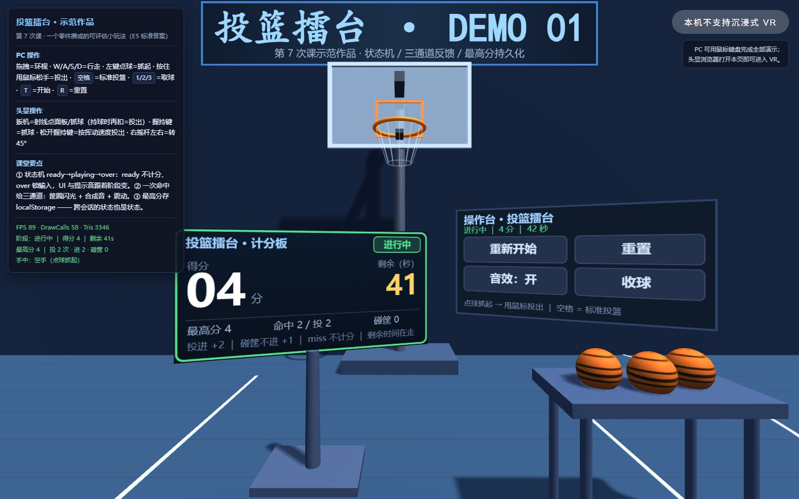
demo01）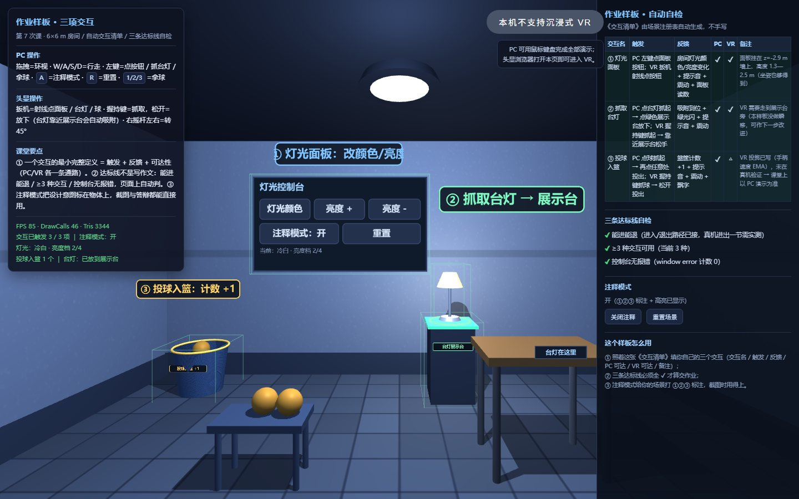
demo02）A 看 ①②③ 注释。E5 的统一要求只有三条，但每条都在回答一个设计问题——为什么这个玩法能被“评分”而不是“只能看”：
| 要求 | 示范里怎么做的 | 它解决了什么问题 |
|---|---|---|
| ① 目标 + 计分显示在 3D 里 | 计分板是场景里的一块 CanvasTexture 面板，分数/时间/最高分三行 | 玩家不用退出沉浸就知道自己做得怎么样；这也是第 8 次课“状态→UI 同步”的伏笔 |
| ② 命中给两通道以上反馈 | 筐闪（视）+ 上扬音效（听）+ pulse(0.8, 90)（触） | “差一点”和“进了”必须一眼一听就能区分，否则玩家学不会调整力度 |
| ③ 有重置按钮 | 面板上的“重置”把球、分数、计时、阶段一起复位 | 球一定会飞出场地。没有重置，演示 30 秒就卡死——这是 E5 排行第一的翻车点 |
| ＋ 阶段状态机 | ready → playing → over，UI 与提示音随阶段变，over 锁输入 | “开始前不计分、结束后不能刷分”——这是第 8 次课状态机的最小原型，今天先用起来 |
侧栏表格逐项列：交互名 / 触发 / 反馈 / PC 可达 / VR 可达 / 备注。学生在页面里就能看到自己“编没编”。
能进能退 ✔ · ≥3 种交互可用 ✔ · 控制台无报错 ✔（用 window.onerror 实时计数，报错就变红）。
按 A 在场景里打出 ①②③ 标注并高亮对应物体——拍录像时观众一眼能看懂你改了什么。
样板不是让你照抄代码，而是让你照抄“交付结构”：一个能跑的文件 + 一张清单 + 三条自检。第 9 次课验收、第 12 次课路演，用的都是同一套结构。
| 栏位 | A 档写法（能拿满分） | B 档写法（换段视频也能说通） |
|---|---|---|
| 主题 | “故宫角楼·脊兽辨认训练：走近看清每只脊兽的朝向与数目” | “一个 VR 故宫漫游体验” |
| 为什么必须 VR | “脊兽在高处屋檐上，必须仰头绕看 + 走近才能看清排列；平面照片看不出前后遮挡与相对高度” | “沉浸感更好、更真实、更有代入感” |
| 核心交互 | “① 射线点脊兽 → 高亮并显示名称；② 传送靠近屋檐 → 视角变化；③ 抓取放大镜 → 看清纹样” | “点击查看信息，可以漫游” |
| 技术点 | 射线 + 传送 + 3D 面板 + 距离判定 + 状态计数 | “VR、3D、交互” |
| 降级方案 | “做不完就砍放大镜，保留‘点选 + 名称’；再不够就把近景改成固定机位 3 个” | “尽量做完” |
六栏一页纸，一栏都不能空；没有选题就没有后面五项里程碑
“为什么把 M1 放在第 7 次课而不是更早”——因为学生此刻才第一次拥有“可交互的零件库”，此时定选题，才不会写出自己做不到的方案。
| # | 栏位 | 怎么算写好了 |
|---|---|---|
| ① | 主题 | 一句话，不要写“VR 体验”这种空话 |
| ② | 为什么这件事必须用 VR | ★ 必须写出一处只有 6DoF / 立体视觉才能成立的体验；可选四类：绕看 · 钻入 · 尺度感 · 双手协同。★ 如果这句话换成一段视频也能说通，就不算数 |
| ③ | 目标用户 | 谁、在什么情况下用 |
| ④ | 核心交互 | ≥3 项，写清“触发 → 发生什么 → 看到什么反馈” |
| ⑤ | 技术点 | 要用到哪些：抓取 / 传送 / 3D UI / 状态机 / 音频 … |
| ⑥ | 跑不动时的降级方案 | ★ 必须写：砍什么、留什么 |
| 档 | 判据 |
|---|---|
| A | 六栏齐全；“为什么必须 VR”写出了一处非 6DoF / 立体视觉不可的体验；降级方案具体到“砍哪个功能、留什么” |
| B | 六栏齐全；“为什么必须 VR”写的是“沉浸感好”“更真实”这类换到视频也能说通的话 |
| C | 缺栏，或选题明显超出 8 周能做完的范围（如多人在线、手势识别训练） |
优先在你自己前几次课做的全景 / 3D 作品上长出一个可交互段落——这是风险最低的路径，也是“复用而非重做”。
高精度手语 / 手势识别 · 多人在线 VR · 云 VR / 串流优化 · 真实医学影像管线 · 依赖眼动或面部追踪 · 纯全景漫游（没有交互）。
【待补充：…】，不要编造。
这条从今天起适用于所有交付物，第 12 次课验收会看这一项。10 条外部视频/图文（已逐条核验标题与内容相关） + 6 个官方文档入口 + 4 张本课图示
课堂不联网：下列外链用于课后自学与H7 视频笔记；课上要放的话请课前缓存或下载。 链接全部指向公开页面（B 站 / three.js 官方 / W3C / MDN），不是我能保证永久有效的资源，打不开就按标题搜同款。
| 知识点 | 资源 | 对应本课 | 怎么看 |
|---|---|---|---|
| WebXR 是什么 | 《WebXR 教学 01 基础介绍》B 站 · 系列教程第 1 集 | 开场 / 三条通路 | 课前预习：建立“浏览器即平台”的概念 |
| 空间应用交互与设计（UI & UX） | 《PICO OS 6 开发者系列 02：空间应用交互与设计详解》B 站 · 官方开发者系列 | 模块 A1/A4 · lab01 / lab06 | 对照我们的“三通道反馈”与四类 UI，看工业界怎么表述 |
| Fitts 定律 | 《交互心理学·交互七大定律之一：菲茨定律》B 站 | 模块 A3 · lab08 | 看完再玩 lab08，把“为什么远距离用射线”自己推一遍 |
| 晕动症 / 动态视场角 | 《VR 动态视场角——解决晕动症的终极方案？》B 站 · 作者自述亲历晕动症 | 模块 C1 · lab07 | 重点看“减少视场角”的思路，和 lab07 的隧道遮罩对照 |
| 移动方式的设计取舍 | 《半条命 Alyx 幕后团队深度谈论玩家的移动方式（中字）》B 站 · 官方访谈中字 | 模块 C1/C2 · lab07 | 听他们为什么同时保留瞬移与平滑；这是“给选项”的经典案例 |
| Alyx 的交互细节 | 同上（访谈） ＋ 图文《VR 眩晕的原因与解决方法》 | 模块 B1 · lab05 | 先看访谈里“重力手套”段落，再回 lab05 对比三段式 |
| 触觉反馈 | 《VR 开发核心基础 39：震动反馈——应用于任何 Interactor》B 站 · 引擎向实操 | 模块 D1 · lab09 | 看参数怎么调；我们讲的是“强度分级语义”，不是引擎差异 |
| 控制器输入 | 《VR 开发核心基础 07：控制接收——捕捉控制器输入》B 站 | 输入基础 · lab01 / lab02 | 对照案例 01 的 selectstart / squeezestart 事件 |
| 手部追踪 | 《[教程] Quest 开发：多模态同时使用手追和手柄》B 站 | 模块 D2 · lab09 | 看“手追 + 手柄”并存时的切换逻辑；我们只做 pinch 确认 |
| “少而准”的交互 | 图文《节奏光剑测评：最好的 VR 音游》 | 模块 B2 · 防 M1 贪多 | 只看它怎么用“挥砍 + 节拍”两件事撑起整个游戏 |
| 入口 | 是什么 | 什么时候用 |
|---|---|---|
| three.js 官方 WebXR 示例总览 | webxr_vr_* 系列：sandbox / dragging / teleport / handinput / rollercoaster … | 想抄哪个零件就搜哪个文件名（模块 D3 的“抄作业地图”） |
| webxr_vr_sandbox | 射线 + UI + 传送 + 抓取的综合沙盒 | 我们 lab01—lab04 的“官方同款” |
| Immersive Web 官方示例集 | W3C Immersive Web 工作组维护的 WebXR 样例（含手部追踪、命中测试） | 查“这个 API 官方怎么用” |
| MDN · WebXR Device API | 最可靠的中文/英文 API 文档 | 查 requestSession、referenceSpace、inputSources |
| W3C · WebXR Gamepads Module | 手柄按钮、轴、hapticActuators.pulse() 的规范口径 | 写触觉前对照一遍，别只信博客 |
| B 站检索：VR 抓取 投掷 | 没有单一权威教程时的检索入口 | 按标题挑播放量高、有工程细节的看 |
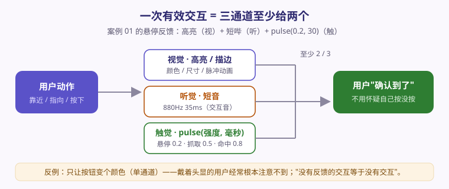
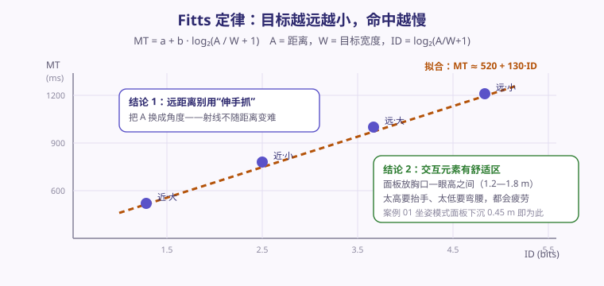
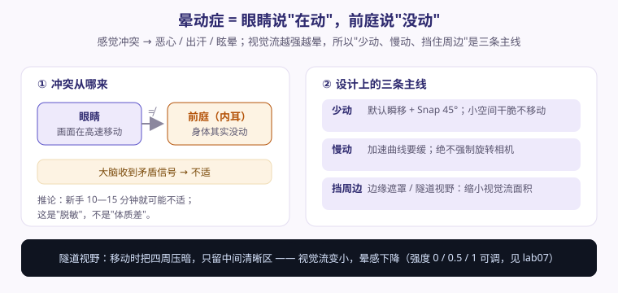
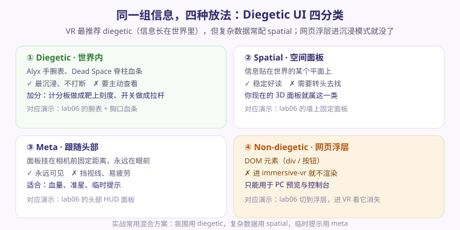
凡不确定的事实一律保留标注，不编造、也不为了页面好看删掉
| 资料 | 是什么 | 在哪 |
|---|---|---|
| 演示中心（九宫格） | 9 个零件演示的索引页，按讲授顺序排；课堂上从这里点开最快 | 打开演示中心 |
| 示范案例 · 投篮擂台 | E5 的标准答案：计分板 + 三通道反馈 + 重置 + 三阶段状态机 | 打开示范作品 |
| 示范案例 · 作业样板 | 3 项交互 + 自动《交互清单》+ 三条达标线自检 + 注释模式 | 打开作业样板 |
| 案例 01 · VR 交互沙盒 | 9 项交互范式的“大沙盒”；单文件 + three.min.js 必须同目录 | 打开案例 01 |
| 期末大作业任务书 | 个人 WebXR 作品、占 40%、十条硬门槛、评分量规、六个里程碑 | 打开任务书 |
| 课堂作业墙 | 上一次课全班已交作品的对照清单 | assets/vr-2026/student/works/ |
| 六案例总览 | 课内六个案例的索引页 | 打开案例索引 |
| 指标 | README 值 | 审计值 | 怎么用 |
|---|---|---|---|
| Draw calls | 49 | 50 | 两套数字略有差异，一律说“README 报 49、审计报 50，基本一致”，不取整、不合并 |
| 三角面 | 2.3k | 2348 tris | 同上 |
| 项 | 现状 |
|---|---|
| 头显型号与数量 | 【待确认：型号与数量】——学生任务卡同样写“型号与数量【待确认】”；若最终是“少于 40 台轮转”，工作室段组织方式要改 |
| 上课场地 | 【待确认：本次课是否固定在一个教室，还是沿用“前两节理论 + 后两节上机”的换场安排】 |
| 课堂选定走通的通路 | 【待确认：由教师课前实测后当堂宣布】——三条都演示，只教走通的那一条 |
| 期末大作业任务书页面 | 已发布（vr-2026-final-project.html）；任务书内容与课次里程碑口径一致 |
| 手柄握持键与触觉 | 案例 README 与演示库都未在真机验证握持键 / 触觉 / 手部追踪；课前需实测 5 分钟，无响应则改用扳机抓取并告知全班 |
| 时间表用哪一版 | 【待确认：标准版 180′（讲授 80 + 工作室 90 + 课间 10）还是加强版 200′】——标准版不需要任何加时，可直接用；加强版需提前申请 20′ |
| E5 用哪个擂台 | 【待确认：课前实测投篮筐碰撞判定是否稳】——建议投篮；不稳则换“彩球归箱”（碰撞判定最简单） |
| 作业提交渠道 | 【待确认：课程群 / 教学平台 / 网站作业墙】——本页提交规范里写的是“由教师当堂宣布”，未写死平台 |
| 校史 / 文物 / 机构等真实信息 | M1 与后续交付物中一律标 【待补充：…】，不得编造 |
squeeze（握持键）与触觉实测 5 分钟：握持键无响应 → 记下并准备改用扳机抓取的口径；Shift+G 能点面板；确认“场景实体仍需手柄”这条边界要怎么说；Shift+H 单手模式试一次：确认“仅左手”下所有交互仍可完成（这是本课要落的核心结论）；Shift+P 坐姿切换试一次：确认自有 UI 随之下沉 0.45 m、下倾 0.18 rad；R 能重置（浏览器控制台跑一次 LAB.api.selfTest() 更快）；你的界面必须是 3D 物件（名字也一样）。
不是 16.7 ms。面板上要认出 FPS 与降级等级 L0 / L1 / L2。
场景实体（球、方块）仍然需要手柄——这条边界就是第 9 次课要讨论的问题。
file:// 不是安全上下文，看不到“进入 VR”按钮——那通常不是你的代码坏了。
一次有效交互 = 视 / 听 / 触至少两个通道；悬停与确认强度要分档（0.2 / 0.5 / 0.8）。
S改一处，画面 / 手感 / 面板读数同时变——这是第 8 次课状态机的起点。
从“能做的事”到“有目标的作品”：空间动线与状态机
| 上次课（10-14） | 本次课（10-21） | 下次课（10-28） | |
|---|---|---|---|
| 一句话 | 从“一个房间”到“一条路” | 从“一条路”到“能做的事” | 从“能做的事”到“有目标的作品” |
| 核心对象 | 一张图（节点 + 边） | 一套零件（射线 / 抓取 / 投掷 / 3D UI / 移动 / 悬停 / 触觉 / 拉取 / 转向） | 有状态的图（每个节点挂“到了这里发生什么”） |
| 学生产出 | 多点漫游作品 + 验收记录 | 个人交互测试台 + 交互清单 + M1 选题一页纸 + H1—H5 作业 | 动线图 + 状态机图 + 可玩入口（M2） |
S 对象（S.step 驱动 UI、提示、音效、门）；ready/playing/over 拿出来讲“状态机是什么”；